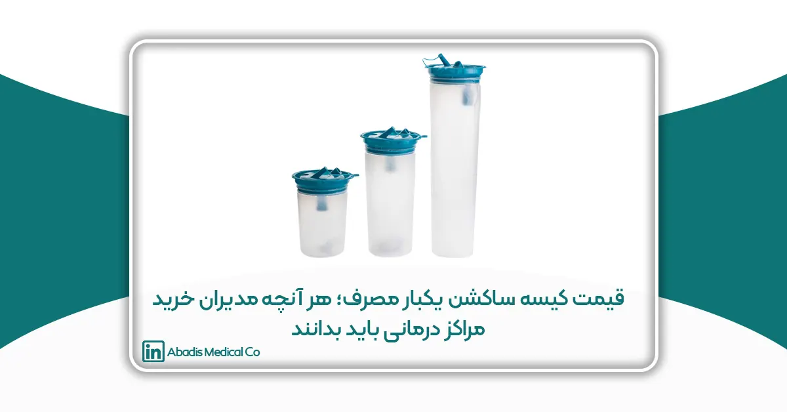
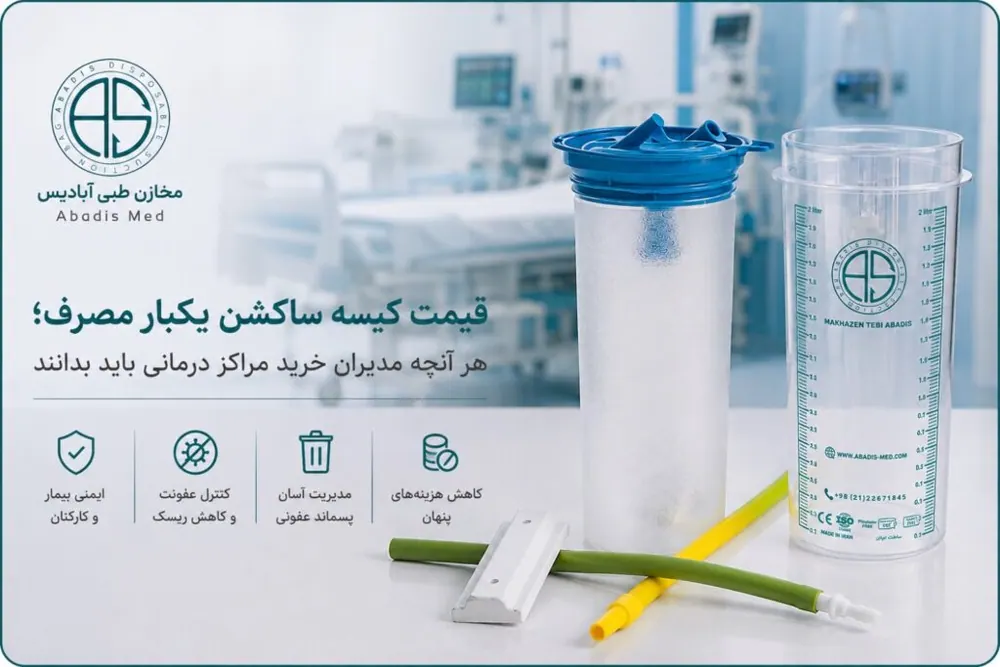
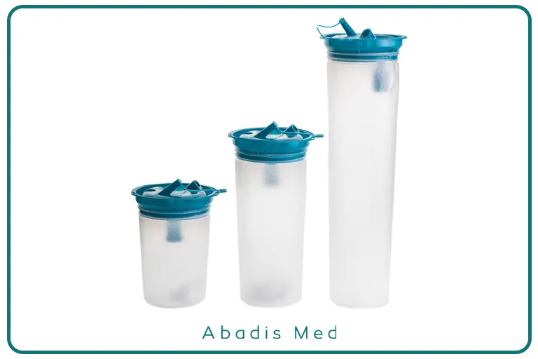

قیمت کیسه ساکشن یکبار مصرف به چه عواملی بستگی دارد؟ در این راهنمای جامع با عوامل مؤثر بر قیمت، استانداردها، کیفیت مواد اولیه، کنترل عفونت، هزینههای پنهان و نکات مهم خرید برای بیمارستانها و مراکز درمانی آشنا شوید.
مقدمه
در مدیریت مراکز درمانی، تصمیمگیری درباره خرید تجهیزات و ملزومات پزشکی تنها بر اساس پایینترین قیمت، رویکردی منطقی و پایدار محسوب نمیشود. تجهیزات پزشکی، بهویژه اقلام مصرفی که بهطور مستقیم در فرآیند مراقبت از بیمار، کنترل عفونت و مدیریت پسماندهای عفونی نقش دارند، باید علاوه بر قیمت مناسب، از کیفیت، ایمنی، دوام و انطباق با استانداردهای معتبر نیز برخوردار باشند.
یکی از این تجهیزات، کیسه ساکشن یکبار مصرف (Disposable Suction Liner Bag) است که امروزه به عنوان بخشی جداییناپذیر از سیستمهای مدرن ساکشن بیمارستانی شناخته میشود. این محصول وظیفه جمعآوری ترشحات، خون، مایعات جراحی و سایر مایعات عفونی را بر عهده دارد و استفاده از آن، علاوه بر تسهیل مدیریت پسماندهای عفونی، خطر تماس مستقیم کارکنان درمانی با مایعات آلوده را نیز به میزان قابل توجهی کاهش میدهد.
با افزایش آگاهی مراکز درمانی نسبت به اهمیت کنترل عفونت و همچنین توسعه استانداردهای بینالمللی، استفاده از کیسههای ساکشن یکبار مصرف در بسیاری از بیمارستانها جایگزین روشهای سنتی جمعآوری ترشحات شده است. در نتیجه، مدیران خرید، کارشناسان تجهیزات پزشکی و مسئولان تدارکات همواره با این پرسش مواجه هستند که چه عواملی باعث تفاوت قیمت کیسههای ساکشن یکبار مصرف موجود در بازار میشود؟
در نگاه اول ممکن است دو محصول از نظر ظاهری شباهت زیادی به یکدیگر داشته باشند، اما اختلاف قیمت آنها گاهی قابل توجه است. این تفاوت معمولاً تنها به نام برند یا کشور سازنده مربوط نمیشود، بلکه مجموعهای از عوامل فنی، مهندسی، استانداردی و اقتصادی در تعیین قیمت نهایی محصول نقش دارند. کیفیت مواد اولیه، طراحی مهندسی، فناوری تولید، وجود سیستمهای ایمنی، استانداردهای کنترل کیفیت، ظرفیت کیسه، نوع اتصالات، قابلیت سازگاری با سیستمهای مختلف ساکشن و حتی خدمات پس از فروش، همگی از جمله عواملی هستند که میتوانند بر قیمت این محصول تأثیر بگذارند.
از سوی دیگر، مدیران مراکز درمانی باید به این نکته توجه داشته باشند که هزینه خرید یک محصول، تنها بخشی از هزینه واقعی استفاده از آن است. در بسیاری از موارد، انتخاب محصولی صرفاً بر اساس قیمت پایین میتواند در بلندمدت هزینههای بسیار بیشتری را به بیمارستان تحمیل کند؛ هزینههایی که ممکن است ناشی از نشت مایعات عفونی، افزایش مصرف آب و مواد ضدعفونیکننده، آسیب به سیستم وکیوم مرکزی، افزایش حجم پسماندهای عفونی، کاهش ایمنی کارکنان و حتی افزایش احتمال بروز عفونتهای مرتبط با مراقبتهای سلامت (Healthcare-Associated Infections – HAIs) باشد.
به همین دلیل، امروزه در فرآیند خرید تجهیزات پزشکی، مفهوم هزینه مالکیت (Total Cost of Ownership – TCO) اهمیت ویژهای پیدا کرده است. این مفهوم بیان میکند که برای ارزیابی اقتصادی یک محصول، تنها نباید به قیمت اولیه خرید توجه کرد، بلکه باید تمامی هزینههای مستقیم و غیرمستقیم مرتبط با استفاده، نگهداری، ضدعفونی، مدیریت پسماند، تعمیرات احتمالی و طول عمر محصول نیز در نظر گرفته شود.
در این مقاله تلاش میکنیم مهمترین عوامل مؤثر بر قیمت کیسه ساکشن یکبار مصرف را از دیدگاه فنی، اقتصادی و مدیریتی بررسی کنیم و نشان دهیم که چگونه انتخاب یک محصول باکیفیت میتواند علاوه بر افزایش ایمنی بیماران و کارکنان درمانی، موجب کاهش هزینههای عملیاتی و بهبود بهرهوری مراکز درمانی شود. همچنین نکاتی را ارائه خواهیم کرد که به مدیران خرید و کارشناسان تجهیزات پزشکی کمک میکند هنگام ارزیابی و مقایسه محصولات، تصمیمی آگاهانهتر و مبتنی بر ارزش واقعی محصول اتخاذ کنند.
چرا قیمت کیسه ساکشن یکبار مصرف در بازار یکسان نیست؟
یکی از پرسشهای متداول مدیران خرید بیمارستانها و مراکز درمانی این است که چرا قیمت کیسههای ساکشن یکبار مصرف تولیدشده توسط شرکتهای مختلف با یکدیگر تفاوت دارد، در حالی که از نظر ظاهری ممکن است عملکرد مشابهی داشته باشند.
واقعیت این است که در تجهیزات پزشکی، ظاهر محصول تنها بخش کوچکی از کیفیت آن را نشان میدهد. بسیاری از ویژگیهای مؤثر بر عملکرد، ایمنی و طول عمر محصول در فرآیند طراحی، انتخاب مواد اولیه، فناوری تولید و کنترل کیفیت نهفته است؛ عواملی که در نگاه اول قابل مشاهده نیستند اما تأثیر مستقیمی بر قیمت نهایی دارند.
برای مثال، دو کیسه ساکشن ممکن است هر دو دارای ظرفیت سه لیتری باشند، اما یکی از آنها از پلیمرهای پزشکی با مقاومت مکانیکی بالا و درزهای جوشکاریشده با فناوری پیشرفته تولید شده باشد، در حالی که دیگری از مواد اولیه با کیفیت پایینتر و فرآیند تولید سادهتری بهره ببرد. هرچند هر دو محصول در ابتدا مشابه به نظر میرسند، اما در شرایط واقعی استفاده، تفاوتهایی مانند مقاومت در برابر پارگی، احتمال نشت، دوام اتصالات، سازگاری با سیستم وکیوم و ایمنی در مدیریت مایعات عفونی، کیفیت واقعی آنها را مشخص میکند.
علاوه بر ویژگیهای فنی، عوامل اقتصادی مانند قیمت مواد اولیه، نرخ ارز، هزینههای تولید، سرمایهگذاری در تجهیزات، آزمونهای کنترل کیفیت، دریافت گواهینامههای استاندارد و خدمات پس از فروش نیز بر قیمت محصول تأثیرگذار هستند. از این رو، مقایسه کیسههای ساکشن تنها بر اساس قیمت خرید، بدون بررسی مشخصات فنی و کیفیت ساخت، ممکن است به انتخابی منجر شود که در بلندمدت هزینههای بیشتری برای مرکز درمانی ایجاد کند.
در بخشهای بعدی، هر یک از این عوامل را بهصورت دقیق بررسی خواهیم کرد تا مشخص شود چرا اختلاف قیمت میان محصولات مختلف، در بسیاری از موارد بازتابی از تفاوت در کیفیت، ایمنی و ارزش واقعی آنها است.

۱. کیفیت مواد اولیه؛ مهمترین عامل تعیینکننده قیمت کیسه ساکشن یکبار مصرف
در میان تمامی عوامل مؤثر بر قیمت کیسه ساکشن یکبار مصرف، کیفیت مواد اولیه مهمترین نقش را ایفا میکند. از آنجا که این محصول مستقیماً با خون، ترشحات، مایعات بدن و سایر پسماندهای بالقوه عفونی در تماس است، استفاده از مواد اولیه مناسب نهتنها بر دوام و عملکرد محصول، بلکه بر ایمنی بیماران، کارکنان درمانی و حتی تجهیزات بیمارستانی نیز تأثیر مستقیم دارد.
برخلاف تصور برخی خریداران، همه کیسههای ساکشن از مواد اولیه یکسان تولید نمیشوند. نوع پلیمر، درجه خلوص مواد، ضخامت فیلم، مقاومت مکانیکی و کیفیت فرآیند تولید، همگی از عواملی هستند که میتوانند موجب تفاوت قابل توجه در کیفیت و قیمت محصول شوند.
استفاده از پلیمرهای پزشکی (Medical Grade Polymers)
کیسههای ساکشن استریل آبادیس از پلیاتیلن مدیکالگرید (Medical Grade Polyethylene) تولید میشوند. استفاده از این ماده اولیه، در کنار فرایند تولید کنترلشده، بستهبندی مناسب و استریلیزاسیون، در حفظ کیفیت و ایمنی این محصولات اهمیت دارد. کیفیت پلیاتیلن مصرفی، یکنواختی فیلم و مقاومت آن در برابر پارگی و نشت نیز میتواند بر عملکرد و قیمت نهایی کیسه ساکشن استریل تأثیر بگذارد.
ضخامت بدنه کیسه
یکی دیگر از عوامل مهم، ضخامت بدنه کیسه است.
در نگاه اول ممکن است تفاوت ضخامت چند میکرون ناچیز به نظر برسد، اما در عملکرد واقعی محصول اهمیت زیادی دارد.
کیسهای که ضخامت کافی نداشته باشد ممکن است در شرایط زیر آسیب ببیند:
- هنگام اعمال فشار منفی بالا
- در زمان جابهجایی مخزن
- هنگام جمعآوری حجم زیاد مایعات
- در فرآیند حمل و دفع پسماندهای عفونی
افزایش ضخامت تا حد استاندارد، مقاومت مکانیکی محصول را افزایش میدهد، اما همزمان مصرف مواد اولیه و هزینه تولید را نیز بیشتر میکند. بنابراین، ضخامت مناسب باید به گونهای انتخاب شود که تعادل میان استحکام، انعطافپذیری و هزینه تولید حفظ شود.
مقاومت در برابر فشار منفی (Vacuum Resistance)
یکی از ویژگیهای مهم کیسههای ساکشن، توانایی تحمل فشار منفی (Negative Pressure) ایجادشده توسط سیستم ساکشن است.
در صورتی که مواد اولیه کیفیت مناسبی نداشته باشند، ممکن است دیوارههای کیسه در اثر مکش شدید تغییر شکل داده یا اصطلاحاً دچار Vacuum Collapse شوند. این وضعیت علاوه بر کاهش عملکرد سیستم ساکشن، میتواند موجب اختلال در جمعآوری مایعات و حتی آسیب به تجهیزات شود.
به همین دلیل، تولیدکنندگان معتبر محصولات خود را تحت آزمونهای عملکردی قرار میدهند تا از حفظ شکل و استحکام کیسه در شرایط مختلف کاری اطمینان حاصل کنند.
مقاومت در برابر پارگی (Tear Resistance)
در محیطهای درمانی، کیسه ساکشن تنها در زمان استفاده تحت تنش قرار نمیگیرد. مراحل نصب، جداسازی، حمل، جابهجایی و دفع نیز میتوانند فشارهای مکانیکی قابل توجهی به آن وارد کنند.
کیسهای که مقاومت مناسبی در برابر پارگی نداشته باشد، ممکن است در هر یک از این مراحل آسیب ببیند و موجب نشت مایعات آلوده شود.
نشت مایعات عفونی علاوه بر افزایش هزینههای نظافت و ضدعفونی، میتواند خطر آلودگی محیط، انتقال عوامل بیماریزا و تماس کارکنان درمانی با پسماندهای عفونی را افزایش دهد.
مقاومت شیمیایی
کیسههای ساکشن تنها با خون یا ترشحات بدن در تماس نیستند.
در بسیاری از مراکز درمانی، این کیسهها ممکن است با موادی مانند:
- محلولهای شستوشوی جراحی
- سرمهای تزریقی
- مواد ضدعفونیکننده
- داروهای مختلف
- ترشحات حاوی ترکیبات شیمیایی
نیز تماس پیدا کنند.
مواد اولیه مناسب باید در برابر این ترکیبات مقاومت کافی داشته باشند تا دچار تغییر رنگ، تخریب ساختاری یا کاهش استحکام نشوند.
شفافیت مناسب؛ فقط یک ویژگی ظاهری نیست
شفاف بودن کیسه ساکشن تنها جنبه زیبایی ندارد.
شفافیت مناسب به کادر درمان اجازه میدهد:
- حجم مایعات جمعآوریشده را بهدرستی مشاهده کنند.
- تغییر رنگ ترشحات را ارزیابی کنند.
- وجود خونریزی فعال را سریعتر تشخیص دهند.
- از پر شدن بیش از حد کیسه جلوگیری کنند.
تولید فیلمهای شفاف و باکیفیت نیازمند استفاده از مواد اولیه مرغوب و کنترل دقیق فرآیند تولید است که این موضوع نیز بر قیمت محصول اثر میگذارد.
کیفیت مواد اولیه چگونه بر هزینههای بیمارستان تأثیر میگذارد؟
اگرچه استفاده از مواد اولیه باکیفیت ممکن است قیمت اولیه محصول را افزایش دهد، اما در عمل میتواند هزینههای کلی مرکز درمانی را کاهش دهد.
برای مثال، یک کیسه باکیفیت:
- احتمال نشت مایعات را کاهش میدهد.
- خطر آلودگی محیط را کمتر میکند.
- از آسیب به مخزن و سیستم وکیوم جلوگیری میکند.
- نیاز به شستوشو و ضدعفونی اضافی را کاهش میدهد.
- ایمنی کارکنان درمانی را افزایش میدهد.
- احتمال بروز حوادث شغلی و مواجهه با مایعات عفونی را کمتر میکند.
به همین دلیل، بسیاری از بیمارستانهای پیشرفته هنگام ارزیابی محصولات، تنها قیمت خرید را ملاک قرار نمیدهند و کیفیت مواد اولیه را بهعنوان یکی از مهمترین شاخصهای تصمیمگیری در نظر میگیرند.
۲. فناوری تولید و فرآیندهای کنترل کیفیت؛ چرا همه کیسههای ساکشن کیفیت یکسانی ندارند؟
در صنعت تجهیزات پزشکی، کیفیت محصول تنها به نوع مواد اولیه محدود نمیشود. حتی اگر دو تولیدکننده از پلیمرهای مشابه استفاده کنند، تفاوت در فناوری تولید، تجهیزات مورد استفاده، دقت فرآیندهای ساخت و سیستمهای کنترل کیفیت میتواند عملکرد نهایی محصول را به طور قابل توجهی تغییر دهد.
کیسه ساکشن یکبار مصرف در محیطی استفاده میشود که هرگونه نقص در عملکرد آن ممکن است علاوه بر ایجاد هزینههای اضافی، ایمنی بیمار و کارکنان درمانی را نیز تحت تأثیر قرار دهد. به همین دلیل تولیدکنندگان معتبر، علاوه بر انتخاب مواد اولیه مناسب، سرمایهگذاری قابل توجهی در خطوط تولید پیشرفته و سیستمهای کنترل کیفیت انجام میدهند.
دقت در فرآیند تولید
کیسه ساکشن ممکن است در نگاه اول محصولی ساده به نظر برسد، اما تولید آن نیازمند کنترل دقیق پارامترهای مختلفی است؛ از جمله:
- دمای فرآیند تولید
- فشار مورد استفاده در جوشکاری حرارتی
- یکنواختی ضخامت فیلم
- کیفیت برش و آببندی
- دقت در مونتاژ اتصالات
- کنترل ابعاد و حجم محصول
هرگونه نوسان در این پارامترها میتواند باعث ایجاد نقاط ضعف در ساختار کیسه شود و احتمال نشت یا پارگی را افزایش دهد.
کیفیت جوشهای حرارتی (Heat Sealing)
یکی از حساسترین بخشهای کیسه ساکشن، محل اتصال لایههای پلاستیکی است.
این اتصالات معمولاً با استفاده از فناوری Heat Sealing یا جوش حرارتی ایجاد میشوند. اگر این فرآیند بهدرستی انجام نشود، درزها به ضعیفترین بخش محصول تبدیل خواهند شد.
کیسههایی که از فناوری پیشرفته جوش حرارتی استفاده میکنند، معمولاً دارای ویژگیهای زیر هستند:
- استحکام بالاتر در محل درزها
- مقاومت بیشتر در برابر فشار منفی
- احتمال کمتر نشت مایعات
- دوام بیشتر هنگام حمل و جابهجایی
در مقابل، ضعف در فرآیند جوشکاری میتواند باعث باز شدن درزها در زمان استفاده و نشت ترشحات عفونی شود.
آزمون نشت (Leak Test)
یکی از مراحل مهم کنترل کیفیت، انجام آزمون نشت است.
در این آزمون، کیسه تحت شرایط مشخص از نظر فشار یا حجم مایع بررسی میشود تا از عدم وجود هرگونه نشتی در بدنه یا محل اتصالات اطمینان حاصل شود.
وجود چنین آزمونهایی هزینه تولید را افزایش میدهد، اما از بروز مشکلاتی مانند آلودگی محیط، تماس کارکنان با مایعات عفونی و آسیب به تجهیزات جلوگیری میکند.
یکنواختی ضخامت فیلم
در تولید صنعتی، صرفاً میانگین ضخامت فیلم اهمیت ندارد؛ بلکه یکنواخت بودن ضخامت در تمام نقاط کیسه نیز بسیار مهم است.
اگر بخشی از کیسه نازکتر از سایر قسمتها باشد، همان نقطه در برابر فشار منفی یا وزن مایعات آسیبپذیرتر خواهد بود.
تولیدکنندگان معتبر با استفاده از تجهیزات دقیق، ضخامت فیلم را در تمام مراحل تولید کنترل میکنند تا محصول نهایی عملکردی یکنواخت داشته باشد.
کنترل کیفیت اتصالات
اتصالات کیسه ساکشن از جمله بخشهایی هستند که بیشترین فشار را در زمان استفاده تحمل میکنند.
این بخشها باید:
- کاملاً آببندی شده باشند.
- در برابر کشش مقاوم باشند.
- هنگام اتصال به شیلنگ یا درپوش تغییر شکل ندهند.
- در اثر فشار منفی از جای خود خارج نشوند.
کنترل کیفیت این بخشها یکی از مهمترین عوامل افزایش قابلیت اطمینان محصول است.
قابلیت ردیابی (Traceability)
یکی از ویژگیهای تولیدکنندگان حرفهای تجهیزات پزشکی، امکان ردیابی هر محصول است.
در بسیاری از کارخانهها، هر بچ تولید دارای شماره شناسایی (Batch Number) است تا در صورت بروز هرگونه مشکل، امکان بررسی فرآیند تولید و شناسایی علت آن وجود داشته باشد.
وجود چنین سیستمی بخشی از الزامات مدیریت کیفیت در صنعت تجهیزات پزشکی محسوب میشود و هزینههایی را به فرآیند تولید اضافه میکند، اما سطح اطمینان محصول را نیز افزایش میدهد.
نقش کنترل کیفیت در کاهش هزینههای مراکز درمانی
گاهی مدیران خرید تنها اختلاف قیمت دو محصول را مشاهده میکنند، اما هزینههای ناشی از کیفیت پایین را در نظر نمیگیرند.
یک کیسه ساکشن که کنترل کیفیت مناسبی نداشته باشد، ممکن است موجب:
- نشت مایعات آلوده
- افزایش زمان نظافت و ضدعفونی
- آسیب به سیستم وکیوم
- تعویض زودهنگام تجهیزات
- افزایش احتمال آلودگی متقاطع
- کاهش بهرهوری کارکنان درمانی
شود.
در نتیجه، محصولی که در ابتدا ارزانتر به نظر میرسد، ممکن است در طول دوره استفاده هزینههای بیشتری به مرکز درمانی تحمیل کند.
۳. ظرفیت کیسه ساکشن؛ آیا حجم بیشتر همیشه به معنای قیمت بالاتر است؟
یکی از عوامل مؤثر بر قیمت کیسه ساکشن یکبار مصرف، ظرفیت یا حجم اسمی آن است. در بازار تجهیزات پزشکی، این محصولات معمولاً در ظرفیتهای ۱ لیتری، ۲ لیتری و ۳ لیتری تولید میشوند و هر یک برای شرایط درمانی و سیستمهای ساکشن متفاوتی طراحی شدهاند.
در نگاه اول ممکن است اینگونه به نظر برسد که اختلاف قیمت میان این محصولات تنها به دلیل مصرف بیشتر مواد اولیه است؛ اما واقعیت این است که طراحی یک کیسه با ظرفیت بالاتر، تنها به افزایش حجم پلاستیک محدود نمیشود. افزایش ظرفیت نیازمند بازنگری در طراحی مهندسی، استحکام مکانیکی، نحوه توزیع فشار منفی و مقاومت در برابر وزن مایعات جمعآوریشده است.
به همین دلیل، ظرفیت کیسه یکی از عوامل مؤثر بر قیمت محصول محسوب میشود، اما تنها عامل تعیینکننده نیست.

تفاوت میان ظرفیت اسمی و ظرفیت واقعی
یکی از نکاتی که کمتر به آن توجه میشود، تفاوت میان ظرفیت اسمی (Nominal Capacity) و ظرفیت واقعی قابل استفاده (Usable Capacity) است.
برای حفظ ایمنی سیستم ساکشن، معمولاً توصیه نمیشود کیسه تا آخرین حجم اسمی خود پر شود. بخشی از فضای داخلی باید به عنوان فضای آزاد باقی بماند تا:
- عملکرد سیستم مکش مختل نشود.
- احتمال ورود مایع به فیلتر یا سیستم وکیوم کاهش یابد.
- از ایجاد فشار اضافی بر اتصالات جلوگیری شود.
- خطر سرریز شدن مایعات به حداقل برسد.
بنابراین طراحی صحیح کیسه باید به گونهای باشد که ضمن تأمین ظرفیت موردنیاز، حاشیه ایمنی مناسبی نیز ایجاد کند.
انتخاب ظرفیت بر اساس نوع بخش درمانی
ظرفیت مناسب کیسه ساکشن به نوع استفاده و حجم تقریبی ترشحات بستگی دارد.
به عنوان مثال:
کیسههای ۱ لیتری معمولاً برای موارد زیر مناسب هستند:
- کلینیکها
- درمانگاهها
- اقدامات سرپایی
- بخشهای بستری با حجم ترشحات کم
در مقابل، کیسههای ۲ لیتری و ۳ لیتری بیشتر در محیطهایی استفاده میشوند که حجم مایعات جمعآوریشده بیشتر است، مانند:
- اتاق عمل
- بخشهای مراقبت ویژه (ICU)
- اورژانس
- مراکز جراحی
- بخشهای تخصصی
انتخاب ظرفیت مناسب علاوه بر افزایش بهرهوری، میتواند تعداد دفعات تعویض کیسه را نیز کاهش دهد.
آیا ظرفیت بیشتر همیشه انتخاب بهتری است؟
پاسخ این سؤال لزوماً مثبت نیست.
استفاده از کیسهای با ظرفیت بالاتر از نیاز واقعی ممکن است باعث:
- افزایش هزینه خرید
- افزایش حجم پسماند پلاستیکی
- اشغال فضای بیشتر
- افزایش وزن هنگام حمل و دفع
شود.
از سوی دیگر، انتخاب ظرفیت کمتر از نیاز نیز میتواند موجب تعویض مکرر کیسه، افزایش احتمال سرریز شدن مایعات و افزایش زمان کاری کارکنان شود.
بنابراین ظرفیت مناسب باید بر اساس نوع پروسیجر، مدت زمان استفاده و میزان تقریبی ترشحات انتخاب شود، نه صرفاً بر اساس بزرگتر بودن حجم.
ظرفیت و تأثیر آن بر قیمت
افزایش ظرفیت معمولاً به معنای افزایش مصرف مواد اولیه است، اما هزینه نهایی تنها به این عامل محدود نمیشود.
در طراحی کیسههای بزرگتر معمولاً موارد زیر نیز اهمیت بیشتری پیدا میکنند:
- استحکام بدنه
- مقاومت در برابر وزن مایعات
- کیفیت درزهای جوش
- استحکام محل اتصال به درپوش
- حفظ شکل کیسه تحت فشار منفی
به همین دلیل اختلاف قیمت میان ظرفیتهای مختلف، علاوه بر میزان مواد اولیه، به پیچیدگی طراحی و الزامات عملکردی نیز وابسته است.
۴. طراحی مهندسی و کیفیت اتصالات؛ عاملی که مستقیماً بر ایمنی، عملکرد و قیمت کیسه ساکشن تأثیر میگذارد
در نگاه اول، ممکن است کیسه ساکشن یکبار مصرف تنها یک محفظه پلاستیکی برای جمعآوری مایعات به نظر برسد، اما در واقع این محصول بخشی از یک سیستم بسته جمعآوری ترشحات (Closed Suction Collection System) است که باید در کنار مخزن ساکشن، فیلترهای محافظ، شیلنگها و سیستم وکیوم مرکزی یا پرتابل، عملکردی کاملاً هماهنگ و ایمن داشته باشد.
به همین دلیل، طراحی مهندسی کیسه و کیفیت اجزای آن نقش مهمی در عملکرد صحیح سیستم ایفا میکند. هرگونه نقص در طراحی یا کیفیت اتصالات میتواند موجب کاهش راندمان مکش، نشت مایعات عفونی، آلودگی محیط و حتی آسیب به سیستم وکیوم شود.
در نتیجه، بخشی از اختلاف قیمت میان برندهای مختلف، ناشی از سرمایهگذاری تولیدکنندگان در طراحی مهندسی و کیفیت ساخت این اجزا است.
طراحی درپوش (Lid Design)
درپوش یکی از مهمترین اجزای کیسه ساکشن است. این بخش علاوه بر نگهداری کیسه در محل مناسب، مسیر ورود ترشحات و اتصال به سیستم وکیوم را نیز مدیریت میکند.
یک درپوش استاندارد باید دارای ویژگیهای زیر باشد:
- نصب آسان و سریع
- آببندی کامل
- مقاومت در برابر فشار منفی
- عدم تغییر شکل در استفاده طولانیمدت
- قابلیت اتصال ایمن به شیلنگهای ساکشن
- حداقل احتمال نشت مایعات
در محصولات باکیفیت، طراحی درپوش به گونهای انجام میشود که حتی در شرایطی مانند تغییر ناگهانی فشار یا جابهجایی مخزن نیز عملکرد پایدار خود را حفظ کند.
کیفیت کانکتورها (Connectors)
کانکتورها یا محل اتصال شیلنگها، از حساسترین نقاط سیستم ساکشن محسوب میشوند.
این بخش باید به گونهای طراحی شود که:
- اتصال کاملاً محکم ایجاد کند.
- از نشت هوا جلوگیری نماید.
- هنگام اعمال فشار منفی از محل خود خارج نشود.
- در برابر کشش و خمشدگی مقاومت کافی داشته باشد.
کانکتورهای بیکیفیت ممکن است باعث کاهش فشار مکش شوند. در چنین شرایطی، سیستم ساکشن برای رسیدن به فشار مورد نظر مجبور است مدت زمان بیشتری کار کند که این موضوع میتواند بر عملکرد تجهیزات نیز تأثیر بگذارد.
سیستم آببندی (Sealing System)
یکی از مهمترین ویژگیهای هر کیسه ساکشن، آببندی کامل (Leak-Proof Sealing) است.
آببندی مناسب موجب میشود:
- هیچگونه نشتی در محل اتصال ایجاد نشود.
- فشار منفی سیستم حفظ شود.
- ترشحات به بیرون نشت نکنند.
- محیط درمانی آلوده نشود.
کیفیت آببندی به عواملی مانند:
- طراحی دقیق قالب
- کیفیت پلیمر
- فناوری جوش حرارتی
- دقت مونتاژ
وابسته است.
تولیدکنندگانی که از تجهیزات پیشرفته و کنترل کیفیت دقیق استفاده میکنند، معمولاً محصولات قابل اطمینانتری ارائه میدهند که البته هزینه تولید بالاتری نیز دارند.
مقاومت در برابر جدا شدن اتصالات
در زمان استفاده از ساکشن، شیلنگها ممکن است بارها جابهجا شوند یا تحت کشش قرار گیرند.
اگر محل اتصال مقاومت کافی نداشته باشد، احتمال جدا شدن شیلنگ یا ایجاد نشتی افزایش مییابد.
این اتفاق علاوه بر اختلال در فرآیند درمان، میتواند باعث انتشار ترشحات عفونی در محیط شود.
به همین دلیل، طراحی مناسب محل اتصال یکی از مهمترین شاخصهای کیفیت محصول است.
۵. استانداردها و گواهینامههای محصول
یکی از عوامل مهمی که بر قیمت کیسه ساکشن یکبار مصرف تأثیر میگذارد، رعایت استانداردهای تولید و الزامات قانونی تجهیزات پزشکی است. تولید محصول مطابق با استانداردهای سیستم مدیریت کیفیت مانند ISO 13485، استفاده از فرآیندهای کنترل کیفیت، انجام آزمونهای عملکردی و دریافت مجوزهای لازم، هزینه تولید را افزایش میدهد، اما در مقابل اطمینان بیشتری از کیفیت و ایمنی محصول فراهم میکند.
برای مراکز درمانی، انتخاب محصولی که مطابق با الزامات تجهیزات پزشکی تولید شده باشد، میتواند احتمال بروز مشکلات فنی، نشت مایعات و مخاطرات ناشی از کنترل عفونت را کاهش دهد.
۶. حجم سفارش و شرایط خرید
قیمت نهایی کیسه ساکشن یکبار مصرف تنها به ویژگیهای فنی محصول وابسته نیست و شرایط خرید نیز میتواند بر آن تأثیرگذار باشد.
عواملی مانند:
- تعداد سفارش
- نوع بستهبندی
- شرایط حملونقل
- قراردادهای بلندمدت
- خدمات پس از فروش
ممکن است موجب تفاوت در قیمت نهایی شوند. به همین دلیل، قیمت اعلامشده برای یک سفارش محدود لزوماً با قیمت خریدهای عمده یکسان نیست.
۷. آیا ارزانترین کیسه ساکشن بهترین انتخاب است؟
یکی از رایجترین اشتباهات در فرآیند خرید تجهیزات مصرفی پزشکی، تصمیمگیری صرفاً بر اساس پایینترین قیمت است.
اگرچه کاهش هزینههای خرید اهمیت زیادی دارد، اما انتخاب محصولی که کیفیت مناسبی نداشته باشد، میتواند هزینههای بسیار بیشتری را در ادامه ایجاد کند؛ از جمله:
- افزایش احتمال نشت مایعات عفونی
- افزایش مصرف مواد ضدعفونیکننده
- صرف زمان بیشتر برای نظافت تجهیزات
- آسیب به سیستم وکیوم
- افزایش خطر تماس کارکنان با ترشحات آلوده
- افزایش هزینههای مدیریت پسماندهای عفونی
به همین دلیل، بسیاری از مراکز درمانی در ارزیابی تأمینکنندگان، علاوه بر قیمت اولیه، کیفیت، دوام، خدمات فنی و قابلیت اطمینان محصول را نیز مدنظر قرار میدهند.
هنگام استعلام قیمت کیسه ساکشن یکبار مصرف به چه نکاتی توجه کنیم؟
برای مقایسه صحیح قیمت محصولات مختلف، بهتر است اطلاعات زیر را از تولیدکننده یا تأمینکننده دریافت کنید:
- ظرفیت کیسه
- نوع مواد اولیه
- سازگاری با سیستم ساکشن موجود
- کیفیت اتصالات و آببندی
- وجود فیلترهای ایمنی (در صورت نیاز)
- استانداردها و گواهینامههای محصول
- شرایط گارانتی و خدمات پس از فروش
- حداقل مقدار سفارش و شرایط تأمین
مقایسه قیمت بدون در نظر گرفتن این مشخصات، نمیتواند تصویر دقیقی از ارزش واقعی محصول ارائه دهد.
جمعبندی
قیمت کیسه ساکشن یکبار مصرف تنها به حجم یا ظاهر محصول وابسته نیست، بلکه تحت تأثیر مجموعهای از عوامل فنی، کیفی و اقتصادی قرار دارد. کیفیت مواد اولیه، فناوری تولید، طراحی مهندسی، ظرفیت، رعایت استانداردهای تجهیزات پزشکی، کنترل کیفیت و شرایط خرید، همگی در تعیین قیمت نهایی نقش دارند.
برای مدیران خرید مراکز درمانی، انتخاب محصولی باکیفیت تنها به معنای پرداخت هزینه بیشتر نیست، بلکه نوعی سرمایهگذاری برای افزایش ایمنی بیماران، حفاظت از کارکنان درمانی، کاهش هزینههای ناشی از نشت و آلودگی، و بهبود مدیریت پسماندهای عفونی محسوب میشود. بنابراین، توصیه میشود هنگام ارزیابی محصولات، علاوه بر قیمت اولیه، عملکرد، دوام، انطباق با استانداردها و خدمات پشتیبانی نیز بهعنوان معیارهای اصلی تصمیمگیری در نظر گرفته شوند.
منابع (References)
- World Health Organization (WHO). Safe Management of Wastes from Health-Care Activities. 2nd Edition. Geneva: World Health Organization; 2022.
- World Health Organization (WHO). Medical Device Technical Series: Medical Device Procurement. Geneva: World Health Organization.
- Centers for Disease Control and Prevention (CDC). Guidelines for Environmental Infection Control in Health-Care Facilities. Atlanta, GA: CDC; Updated 2023.
- Centers for Disease Control and Prevention (CDC). Guideline for Isolation Precautions: Preventing Transmission of Infectious Agents in Healthcare Settings.
- Occupational Safety and Health Administration (OSHA). Bloodborne Pathogens Standard (29 CFR 1910.1030). U.S. Department of Labor.
- Association for the Advancement of Medical Instrumentation (AAMI). Guidance on Medical Suction Equipment and Vacuum Systems.
- ECRI Institute. Medical Suction Equipment Evaluation and Procurement Guidance.
- ISO 13485:2016. Medical Devices — Quality Management Systems — Requirements for Regulatory Purposes.
- ISO 10079-1. Medical Suction Equipment — Electrically Powered Suction Equipment.
- ISO 7396-1. Medical Gas Pipeline Systems — Pipeline Systems for Compressed Medical Gases and Vacuum.
- National Health Service (NHS). Health Technical Memorandum (HTM) 02-01: Medical Gas Pipeline Systems.
- Association of periOperative Registered Nurses (AORN). Guidelines for Perioperative Practice – Surgical Suction and Fluid Management.
- European Centre for Disease Prevention and Control (ECDC). Infection Prevention and Control in Healthcare Settings.
- Rutala WA, Weber DJ. Disinfection and Sterilization in Health Care Facilities: Current Issues and New Technologies. American Journal of Infection Control.
- Weber DJ, Rutala WA. Environmental Infection Prevention and Control in Healthcare Facilities. Infection Control & Hospital Epidemiology.
- World Health Organization (WHO). Global Guidelines for Infection Prevention and Control.
- Association for Healthcare Resource & Materials Management (AHRMM). Best Practices in Healthcare Supply Chain and Procurement.
- The International Federation of Infection Control (IFIC). Basic Concepts of Infection Prevention and Control.